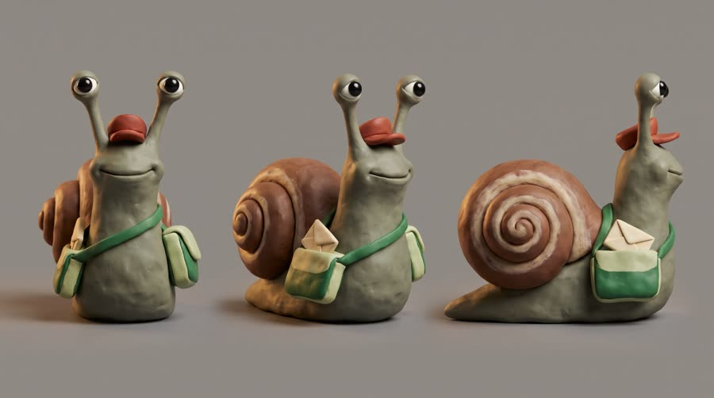
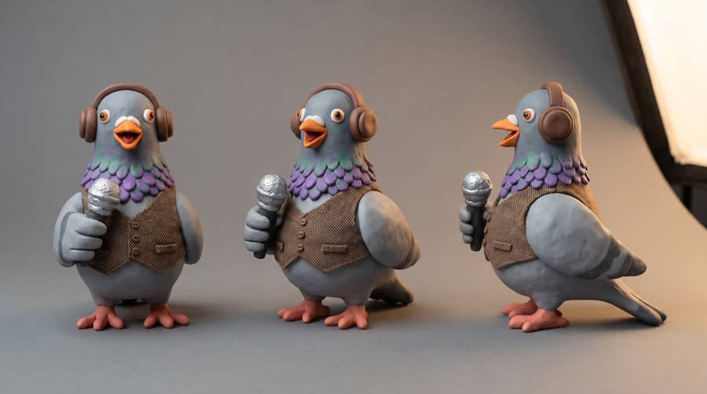
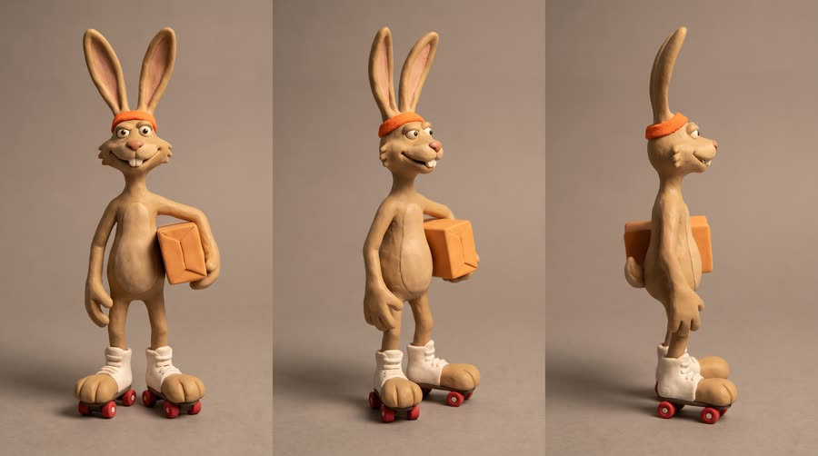
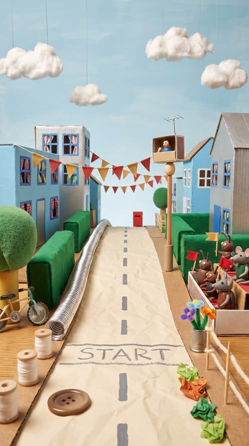
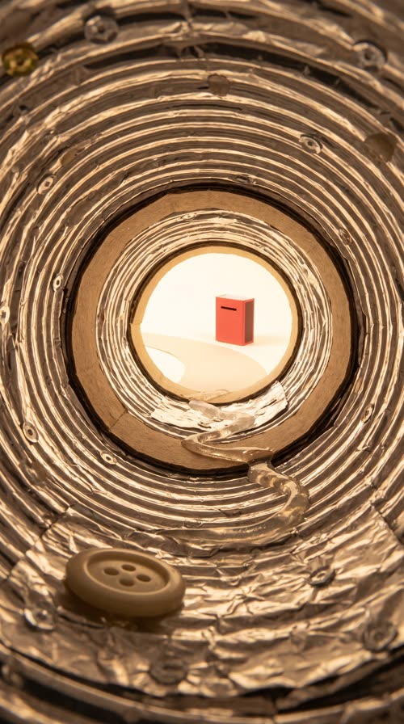
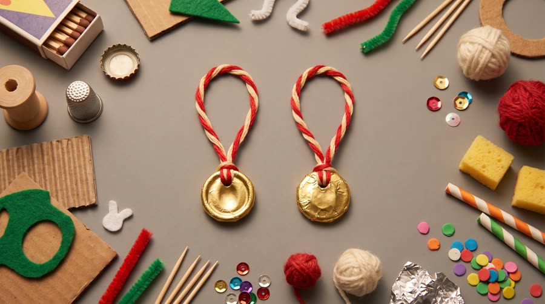
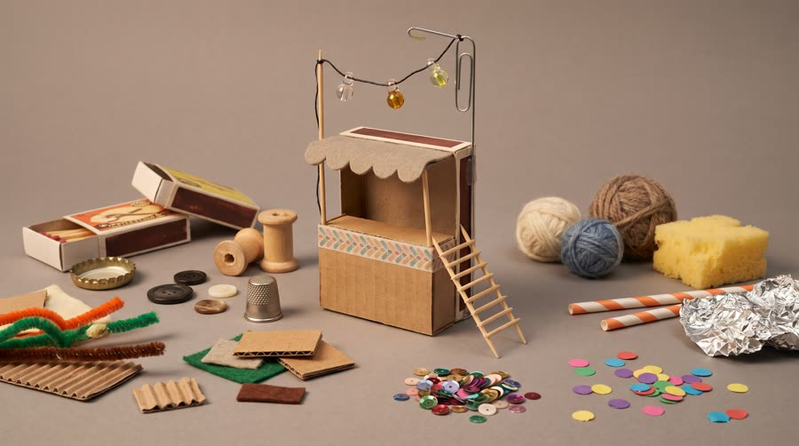
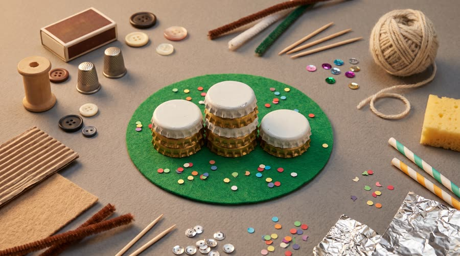

Snail Mail
The Puddleton Parcel Dash: the fastest couriers in town against one old snail with a letter to deliver. He can't outrun them, so he out-thinks them, with Red Bull Sugarfree.
Handmade texture reads as craft and care, the opposite of a polished ad, so it stops the scroll: creators report claymation CTR at 2 to 3x the feed average and it is winning in multiple Meta accounts. It is also the family of 'material' looks (felt, crochet, LEGO) that practitioners use as a variety lever on the same script, so one board yields several fresh creatives.
Contact sheet
One keyframe per shot, with the caption as it will appear.


Cast and world

Voice: man, 70s, slow warm Southern American drawl, unhurried and wry

Voice: woman, 30s, Black American, fast, bright sportscaster energy, big disbelief

Voice: none (reacts with pants and a squeak)


World. Puddleton, a fictional handmade clay town on a tabletop: sky-blue and silver cardboard houses, a hill street of painted card, a corrugated drainpipe running down the hill, cotton-wool clouds on wires, the Puddleton Parcel Dash street race from a chalk start line to the post-office mailbox at the bottom of the hill. Palette. Craft colours built from the can: sky-blue and silver card buildings, clay-red and gold accents (the start flag, the medal), cream paper road, green felt hedges.
Fictional brands. Puddleton Post (Gus's employer, green and cream satchel with a plain envelope shape, no letters); Parcel Dash (the race, spoken only; its banners are blank bunting)
World bible
Fixed with the concept: the lore, the objects and the textures that make this world specific. Only product-adjacent props change per product.
- Puddleton is a clay town that sits on the far end of a craft table. Everything in it was made from something else: matchboxes, bottle caps, buttons, spools, felt and foil.
- The Parcel Dash runs once a year from the top of Crumb Hill to the old post-office mailbox at the bottom. The prize is a gold foil medal on embroidery thread.
- Gus has delivered Puddleton's post for 40 years and has never won the Dash. His cap has a repair stitch where it tore in last year's race.
- Blaze has won three years running on bead-wheel skates and wears the three bottle-cap medals round his neck.
- Pip calls every race from a matchbox booth bolted to a paper-clip lamp post.
Materials. Every object is a recognisable craft material in miniature: matchboxes, bottle caps, buttons, thimbles, cotton reels, corrugated card, felt, pipe cleaners, toothpicks, sequins, wool, sponge, paper straws, foil, hole-punch confetti. Visible fingerprints, glue shine and tool marks.
Wear and time. Race morning, bright table-lamp sun. The set is well used: fingerprints on every surface, a little dust, glue shine at joins, a pencil line where the road was measured out.
Signature objects



Set dressing by location
Foreground
cotton-reel bollards along the kerb; a button manhole cover in the road; a toothpick fence strung with wool rope; a thimble planter of pipe-cleaner flowers; crumpled tissue-paper leaves in the gutter
Midground
poster-paint lane stripes on the paper road, one lane per racer; a matchbox grandstand of clay beetles and a mouse family waving tiny felt flags; a bottle-cap bicycle leaning on a sponge tree; a stamp-sized strand of fabric bunting
Background
cardboard houses with painted windows and scrap-fabric curtains; a washing line of tiny knitted socks between two chimneys made of pencil stubs; cotton-wool clouds on visible wires; a brush-stroked painted sky; the corrugated foil drainpipe running down Crumb Hill
Foreground
crinkled kitchen foil walls; sequin rivets along the seams; a lost button on the floor of the pipe
Midground
a clear glue slime trail left by Gus
Background
the bright round exit onto the paper road and the red mailbox
- Gus: a green felt satchel with a brass-button clasp; a cream envelope sealed with a red wax blob; a clay-red courier cap with a visible white repair stitch; a pocket watch made from a watch battery on a thread chain
- Pip: headphones made of two buttons and a pipe-cleaner band; a silver bead microphone on a wire; a clipboard made from a postage-stamp-sized card with pencil scribbles
- Blaze: white clay roller skates with red bead wheels; an orange terry-towel sweatband; three bottle-cap medals on string round his neck
- Puddleton Post: a cream envelope shape with a red wax dot, green and cream. On: Gus's satchel, the mailbox door, the post-office flag. Text in post: none
- Parcel Dash: a red and gold chequered pennant, clay red and gold. On: bunting, the start banner, the medal ribbon. Text in post: race title card only
soft clay squelch footsteps; paper and card rustles; foil crinkle inside the drainpipe; button clicks and bead rattles; a crowd of tiny squeaks and cheers; the pop of the can in a tiny world
Beats
| Time | Beat | What happens |
|---|---|---|
| 0-3 | hook | The announcer pigeon does a double take: a snail is racing. |
| 3-8 | setup | The start line, the flag drops, everyone blurs away; Gus has moved a thumb-width and is not worried. |
| 8-14 | product | At the refreshment stand the can towers over him; he sips through a long straw and his eyestalks snap sharp. The brand line. |
| 14-21 | build | He spots the drainpipe, tucks into his shell and rockets down the hill through the pipe. |
| 21-26 | payoff | He pops out at the mailbox and posts the letter first as the rabbit skids in behind him. |
| 26-30 | cta | Gus on the bottle-cap podium with a medal, the can beside him. Tagline. |
Screenplay
32 spoken words in 30 s. Each line keeps its intent (fixed in the template) and its wording (written for this product).
| Time | Speaker | Line | Intent (template) |
|---|---|---|---|
| 0.3-2.5 | Pip | And in lane four... a snail? Seriously? fast sportscaster patter that screeches to a stop, double take | Hook: someone in the world cannot believe the hero is even trying. |
| 6.4-8.2 | Gus | Fast is fine. Sharp is faster. slow drawl, dust settling around him, not bothered at all | The hero's philosophy: the product's benefit as a way of winning, not a boast. |
| 11.4-13.6 | Gus | Red Bull Sugarfree. Keeps me sharp. after the sip, eyestalks snapping upright, a satisfied drawl · Say: RED BULL SHUG-er-free, three clear words | Product line: name the product and the one benefit this story needs, from an allowed claim only. |
| 17.6-19.2 | Pip (off camera) | He's taking the drainpipe! shrieking with delight | The world notices the hero's smart move. |
| 22.6-23.8 | Pip (off camera) | The snail wins it! full sportscaster roar | Payoff: the result, called by the world. |
| 24.4-25.4 | Gus | Special delivery. dry, a tip of the cap | The hero's button: two understated words. |
| 27.6-29.4 | Gus (off camera) | Wiiings without sugar. slow warm drawl voiceover · Say: WINGS, stretch the vowel slightly | Tagline in the brand's own words. |
Generation plan
U1 · 0 to 8.4 s · 9 s generation
Shots S01, S02, S03, S04 · References: pip card, gus card, blaze card, street plate, S01 keyframe as first frame
9:16 claymation stop-motion on a handmade miniature clay town, animated on twos at 12 fps with slight frame-to-frame clay boil, no motion blur, visible thumbprints, warm tabletop light. Shot 1 (0 to 2.7 s): @Image1 (Pip, a clay pigeon announcer with headphones) in a matchbox booth, fast patter that stops dead as she leans out and stares down, stepped crash zoom: "And in lane four... a snail? Seriously?" Shot 2 (2.7 to 4.4 s): low wide on the chalk start line, @Image3 (Blaze, a clay jackrabbit on roller skates) crouched next to @Image2 (Gus, a tiny clay snail with a red cap and satchel). Shot 3 (4.4 to 6.2 s): a flag drops from a clay starter's flag, all racers shoot away as streaky clay smears and cotton dust puffs, Gus stays at the line. Shot 4 (6.2 to 9 s): macro close-up of Gus as the dust settles, one eyestalk raised, slow drawl: "Fast is fine. Sharp is faster." Native sound: cork pop, clay squeaks, skates, crowd. No music. No text on screen, banners blank.
U2 · 8.4 to 14.0 s · 6 s generation · exact-risk (short, cheap to re-roll)
Shots S05, S06 · References: product can official, gus card, S05 keyframe as first frame
9:16 claymation stop-motion, animated on twos at 12 fps, matte plasticine with thumbprints, warm tabletop light. Shot 1 (0 to 2.4 s): slow tilt up the exact real can from @Image1, opened, standing on the clay street beside a tiny cardboard refreshment stand, towering over @Image2 (Gus, the tiny clay snail) like a water tower; a red and white clay straw hangs from its top down to him. The can is a real printed aluminium object, not clay, label to camera, upright and undistorted. Shot 2 (2.4 to 6 s): Gus sips through the straw with a long slurp, his eyestalks snap straight and his eyes go sharp, he lets go and says in a satisfied drawl: "Red Bull Sugarfree (said RED BULL SHUG-er-free, three clear words). Keeps me sharp." Keep the can's shape, colours, wordmark, bulls and gold sun exactly as @Image1; the can does not move. Native sound: slurp, springy eyestalks. No music.
U3 · 14.0 to 26.0 s · 12 s generation
Shots S07, S08, S09 · References: gus card, blaze card, street plate, drainpipe plate, S07 keyframe as first frame
9:16 claymation stop-motion on a handmade clay town, animated on twos at 12 fps, clay smears for speed, no real motion blur. Shot 1 (0 to 2.6 s): over the shoulder of @Image1 (Gus, the clay snail), rack focus down the hill: the other racers tangled in a pile-up at a hairpin bend, the silver drainpipe beside him running straight down; he narrows his eyes, hmm. Shot 2 (2.6 to 6.6 s): inside the foil drainpipe, Gus tucked into his shell rolls and spirals toward the bright exit, trailing a brown clay smear, a joyful echoing whoop; a woman announcer's voice off screen shrieks: "He's taking the drainpipe!" Shot 3 (6.6 to 12 s): low wide at the bottom of the hill, Gus pops out, stretches up and slides a cream envelope into a plain red mailbox; @Image2 (Blaze, the clay jackrabbit on skates) skids in behind, panting, ears drooping; confetti falls; the announcer roars: "The snail wins it!" Gus tips his cap, dry: "Special delivery." Wheels on the ground, normal gravity. Native sound: rattling tumble, envelope thunk, skate skid, crowd. No music. No text, mailbox blank.
U4 · 26.0 to 30 s · 5 s generation · exact-risk (short, cheap to re-roll)
Shots S10 · References: product can official, gus card, S10 keyframe as first frame
9:16 claymation stop-motion pack shot, animated on twos at 12 fps. Slow motion-control push-in on a bottle-cap winners' podium on the clay street: @Image2 (Gus, the clay snail) on the top step in a gold clay medal, bobbing proudly, and beside the podium the exact real can from @Image1 standing upright, a real printed aluminium can, not clay, label to camera, towering over the podium with a soft contact shadow. Paper confetti drifts. The can does not move or change shape. Clean pale blue painted sky above the can. Native sound: cheering crowd fading. No music, no text.
Sound, music, voice, captions
| 0 to 8.4 s | line-up | Jaunty plucked banjo and woodblock in G major, 120 bpm, ragtime bounce, stops dead for the cork pop, then one lazy clarinet note for Gus. |
| 8.4 to 14.0 s | refreshment | Sparse: a soft ukulele vamp under the slurp, a bright xylophone run as his eyestalks snap straight. |
| 14.0 to 26.0 s | dash | The banjo theme at double time with brushed snare, tuba and a spiralling clarinet run down the drainpipe, a big brassy hit on the envelope going in. |
| 26.0 to 30 s | podium | The theme resolves on a warm banjo and tuba button, one final woodblock clop. |
Added sound
- 4.5 s: cork pop from the starter's flag (the race start must register, it sets up the joke)
- 11.6 s: long straw slurp and a springy eyestalk boing (the product moment must land as the turn; only added if native sound is weak)
- Pip: native voice from U1, then her U1 vocal stem as voice reference for her off-camera calls in U3
- Gus: native voice from U1, then his U1 stem as voice reference for U2, U3 and the U4 tagline voiceover
font: Cooper Black, size: 5.4% of frame height, color: #FFF6E0 (cream), active word: #E8413C (clay red), others cream, shadow: hard 0 4px 0 #3B2A1E offset (a cut-paper drop shadow), no blur, box: False, position: centre, 69% down the frame, clear of the platform UI safe zone, max words on screen: 3, motion: captions animate on twos (12 fps) with a 1 px random jitter per frame so the type boils like the clay
Post text- 27.2 to 30 s: Red Bull Sugarfree / Wiiings without sugar (Cooper Black, cream with a hard dark-brown cut-paper drop shadow, centred in the sky above the can, steps on at 12 fps with 1 px boil)
Adaptation contract
How this same concept takes any physical product.
| Product type | Where it sits in the story | Scale |
|---|---|---|
| ingested | he sips it at the roadside refreshment stand mid-race | the can towers over him like a water tower; he drinks through a long clay straw |
| applied | he rubs it on before the start (balm, sunscreen, shell polish) | the pot is his size |
| worn | the kit he puts on at the start line (cap, shoes, glasses, watch) | body |
| handheld | the gadget that shows him the shortcut (phone, map, earbuds, tracker) | a giant screen to him |
| carried | the bag that holds the letter and gets him through the pipe | body |
| home | the thing at the post office that sets him up every morning (lamp, chair, kettle, bed) | room |
| consumable | the refill he grabs at the refreshment stand | towering |
Style bible
Look. Miniature scale that is proud of itself: shallow depth of field like a macro lens on a tabletop, characters 3 to 5 cm tall, props from real life at real size (a bottle cap is a podium, a drainpipe is a highway). Chunky simple character shapes, bead or button eyes with painted highlights, mouths as replaceable clay shapes. Visible fingerprints, slight lumpiness, a seam here and there. Sets are flat-painted cardboard, balsa and felt, lit like a tabletop. The product is the only thing on the set that is not handmade, which makes it the hero by contrast.
Camera. Tabletop camera: locked off most of the time (stop-motion rarely moves), slow motion-control slides or push-ins for hero beats, low macro angles at character height so the set feels huge. No handheld. Crash zooms are done as 3 or 4 hard stepped frames, not smooth.
Light and texture. Warm tabletop key from one side (a studio softbox look), bounce fill, a small back light that shows fuzz on felt and the clay's matte surface. Light is steady; the only flicker allowed is the faint frame-to-frame exposure breathing of real stop-motion. Matte plasticine with thumbprints, tool marks and tiny dust specks, felt and card surfaces with fibres, painted wood grain, cotton-wool clouds on wires. Slight frame-to-frame 'boil' in the clay surfaces. Motion blur is faked with clay smears, never real camera blur.
Pacing. Hook: a funny character and a line in the first 2 s. Shots of 2 to 4 s held longer than live action because the audience savours the craft. Comic beats land on a held pose of 6 to 8 frames. Product beat held at least 2 s. The fastest section uses stepped clay smears and hard cuts on twos.
Sound. Native sound from the generations, recorded close and a little dry: squelchy clay footsteps, wooden clacks, cardboard rattles, voices with character. One jaunty score (plucked banjo or ukulele, woodblock, clarinet, brushed snare) stitched across units. Added sound only for events the viewer must register (the can crack, the starter pop).
Known failures.
- the model sculpts the can in clay and garbles the wordmark: always say 'the exact real can from the product reference, a real printed aluminium can standing on the miniature clay set, not made of clay'
- the characters go smooth and CG (no thumbprints) and the look slides into 3D animation: say 'visible thumbprints, matte plasticine, handmade' every time
- the snail's shell spiral, cap colour or satchel swap between shots: pass the cast card and restate cap and satchel colours
- scale drifts so the can shrinks to character size: state 'the can towers over him like a building' in every can shot
- banners, mailboxes and post-office signs grow fake lettering: say 'blank banners, plain signs with no letters'
- smooth video-model motion kills the stop-motion feel: the video prompt must say 'stop-motion animation on twos at 12 fps, slight frame-to-frame clay boil, no motion blur'
- wide street scenes in 9:16 come back rotated: say 'upright vertical composition, level horizon, the table surface flat'
- the rival's roller skates or bike wheels float off the ground: say 'wheels on the ground, normal gravity'
- a character who speaks in the hook gets staged tiny in a wide establishing frame: say 'fills the upper two thirds of the frame, close to the lens' so the hook reads on a phone
- in busy multi-character shots the hero's clay colours drift (Gus came back bright green): restate body and shell colours and add 'not bright green' style exclusions
- the real can's pull tab comes back blue or silver instead of red: minor, fix in the video unit by referencing the official can
- the model gives the snail arms and inflates him to rabbit size when he has to do something with his hands: say 'no arms, a snail's body only', have him act with his head or eyestalks, and state the relative heights of the cast
- race starts drift to starter pistols, which read as a gun in feed: use a starter's flag and say no guns or weapons
- capitalised emphasis words in a prompt (ANALOG, START) get printed onto objects: never write words in capitals, describe the look instead
Claims and cost
Claims used (all from the product page): Caffeine helps to improve concentration and increase alertness (as 'keeps me sharp'); Same benefits of the original Energy Drink, without sugar (tagline form)
Video estimate: 32 s of generation at $0.27/s = $8.64 first pass, $20 to 30 with retakes, plus about $1.5 music.